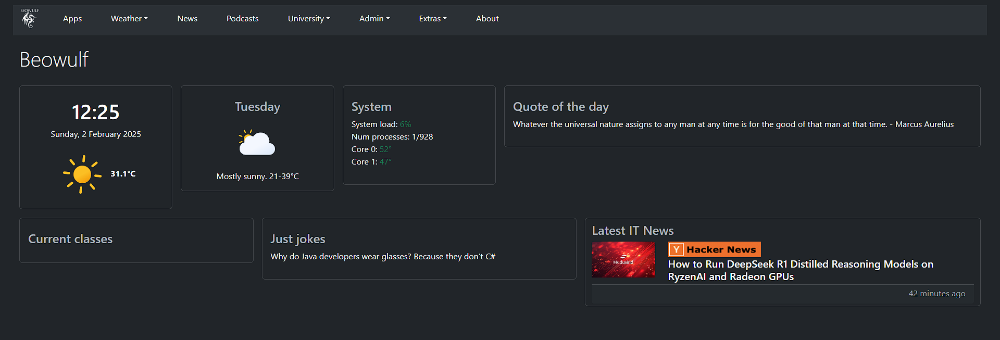
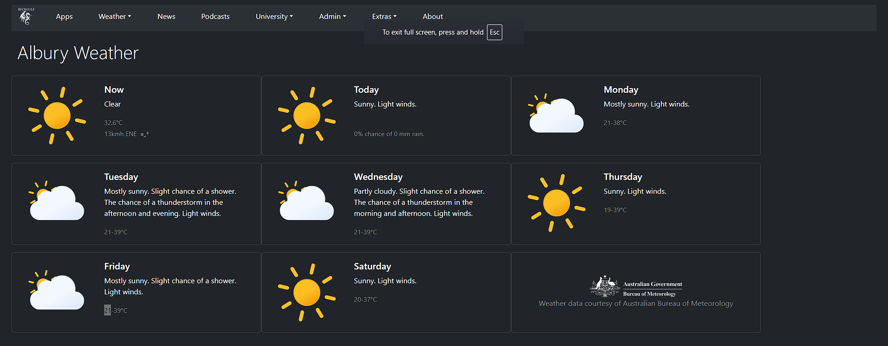

Beowulf is a home server that I built in 2015 to host my personal data and services. This project is, without doubt, the best value for money I've ever had from a computer. Before I built this, I'd been using an old PC running Ubuntu 14 desktop as a HTPC, but I was running out of storage, and I wanted to separate the client/server functions. I'd also suffered a failed hard drive in my laptop and lost some precious data, so I wanted to make sure that didn't happen again.
At first it was just a file server, but over the years I've added more services to it, and now I couldn't live without it.

Since this is a learning project, I've tried to implement all functionality from first principles. Beowulf is a headless server, so it doesn't have a monitor, keyboard or mouse. I manage it using SSH and web interfaces. I've built the software stack incrementally, and I've learned a lot about Linux, networking, and security along the way.
I've built a dashboard that gives me a convienent overview. It's built using PHP, JavaScript, Bootstrap 5, MySQL, and SQLite. It's very flexible and extendable, and it lets me keep an eye on things like the weather, the news, and server load.
The WeatherAPI is a simple and convienent way to get the weather.... but that was too easy. I wanted to get my weather data directly from the Australian Bureau of Meteorology (BOM). The BOM publishes a lot of data, but it's not in a very user-friendly format.
I wrote a PHP script that runs on a timer with cron. The script fetches the data, parses it, and stores it in a SQLite database. I created an API to serve this data over my network, so any web-service has access to it. I then use JavaScript to fetch the data from the database and display it on the dashboard.
Over time I built up a weather data set that I could use to create graphs and identify extreme values.
I took a break from social media in 2020 as part of my commitment to my university degrees... but I still needed to read the news to keep up with current events. I wrote a custom RSS feed reader and loaded it up with my favourite news sources. I have two feeds that I can switch between: A breaking news feed, and a tech news feed. Again, this is served by an API so I can plug a news ticker or RSS feed reader into any web-service on my network.
Beowulf runs a number of services that I use every day, and I've built an app launcher into my intranet that makes them easy to find. Newer services are hosted in Docker containers, but some of the older ones are still running on the host.
Beowulf is due to be replaced in a couple of years. I'm planning to build a more powerful server that can run AI workloads and host a Kubernetes cluster, so I'll containerizing everything then.
This menu that I wrote in C++ simplifies my sys admin tasks. It's presented to me when I login.
Hacking the federal reserve is an Easter Egg that impresses little kids.
The very best (text based) games can be launched from the menu too.